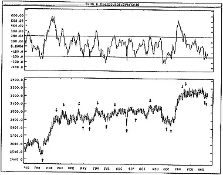
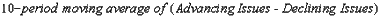

The Overbought/Oversold ("OB/OS") indicator is a market breadth indicator based on the smoothed difference between advancing and declining issues.
The OB/OS indicator shows when the stock market is overbought (and a correction is due) and when it is oversold (and a rally is due).
Readings above +200 are generally considered bearish and readings below -200 are generally considered bullish. When the OB/OS indicator falls below +200 a sell signal is generated. Similarly, a buy signal is generated when the OB/OS indicator rises above -200.
As with all OB/OS-type indicators, extreme readings may be a sign of a change in investor expectations and may not be followed by the expected correction. (Refer to the discussion on the Advance/Decline Ratio, and the McClellan Oscillator, for additional comments on extremely overbought/oversold conditions.)
The following chart shows the DJIA and the Overbought/Oversold indicator.
 I drew "buy" and "sell" arrows when the indicator penetrated the +200/-200 levels. The OB/OS indicator works very well in this type of trading-range market.The Overbought/Oversold indicator is a 10-period exponential moving average of the difference between the number of advancing and declining issues.
